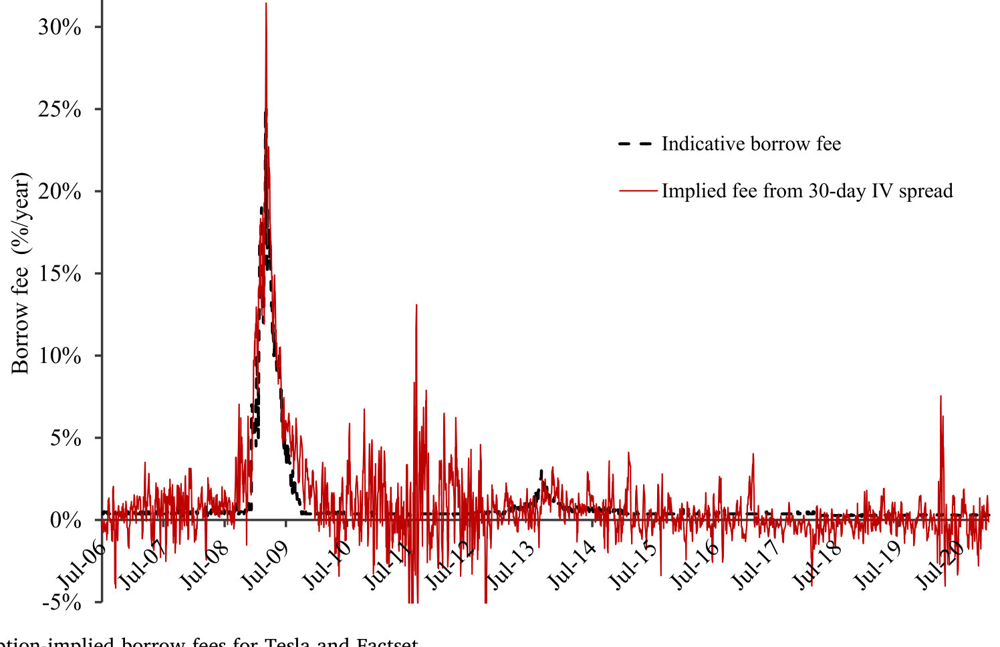
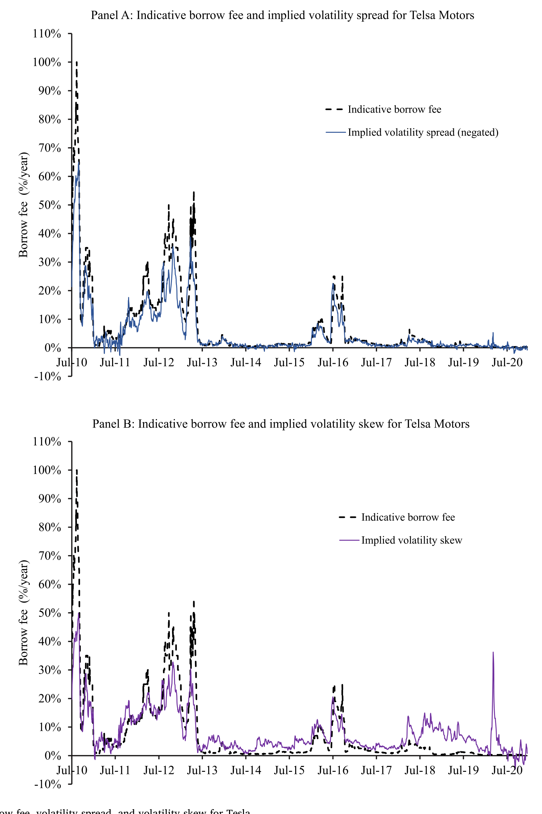
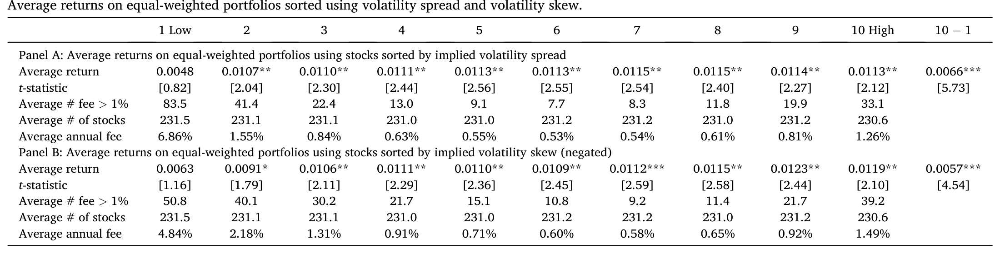
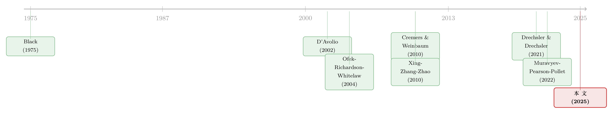

期权里藏着的，不是先知，而是一张借券账单
本文读的是 Muravyev, Pearson & Pollet (2025, JFE)：人们一直惊讶于「期权隐含波动率能提前一两周预测股票收益」这件事——既然期权价格人人可见，为什么这种可预测性没被套利掉？作者给出的答案出人意料地朴素：所谓的「波动率价差」「波动率偏度」之所以能预测股票收益，主要是因为它们在替卖空借券费 (stock borrow fee) 打工。一旦把借券费还原回去，或者干脆剔除掉那 11% 的高费股票，这些策略的超额收益就塌掉了至少三分之二，t 值也随之归于沉寂。
1 一个让人不安的「免费午餐」
先讲一个老故事。
二十多年来，实证期权文献里反复出现一个让人既兴奋又不安的发现：把期权价格做一些变换——最有名的是 Cremers and Weinbaum (2010)（下称 CW）提出的波动率价差 (volatility spread)，以及 Xing, Zhang, and Zhao (2010)（下称 XZZ）提出的波动率偏度 (volatility skew)——你就能在未来一到几周里，预测出股票的横截面收益。多空组合一个月能挣下几十个基点，统计上还相当显著。
兴奋是因为：这看起来像一台印钞机。不安是因为：它不该存在。
期权价格不是什么秘密。它们逐笔公开，做市商、对冲基金、自营盘同时在期权和股票两个市场里来回穿梭，信息在两个市场之间几乎是瞬时流动的。如果期权价格里真的藏着「这只股票下周会跌」的信息，那么一个能同时看到两个市场的聪明投资者，理应立刻在股票上做空，把这点超额收益抹平。可现实是，这点收益偏偏要花上好几周才被股价吸收。
于是文献给出的标准解释是——市场是分割 (segmented) 的：期权市场更「聪明」，信息先到那里，然后才慢慢渗透到「迟钝」的股票市场。换句话说，股价相对于期权里的信息是无效的。
这是一个很大的指控。它意味着在一个被研究得最透彻、参与者最精明的市场里，存在一个稳定的、可被简单交易规则捕获的无效率。本文三位作者——其中两位（Muravyev、Pearson）恰恰是研究借券市场的行家——对这个故事打了一个大大的问号。
他们的怀疑不是凭空而来。如果期权信息真的可以被廉价地套利，那它早就该消失了；它没消失，恰恰说明在「看到信号」和「赚到钱」之间，隔着一道真实的成本。这道成本是什么？
2 被当成「股息」忘掉的那笔费用
接着，一个自然的问题是：到底是什么东西，既能让波动率价差看起来像在预测收益，又能阻止人们把这点收益赚到手？
作者的答案是同一样东西：卖空借券费。
要做空一只股票，你得先把它借来。借券是要付费的——这笔费用叫借券费（或称 loan fee）。它按天计提，只要空头头寸开着，就一直在走。对极少数「难借」(hard-to-borrow) 的股票，这笔年化费率可以高得惊人。它是已知的、最强的收益预测变量之一（Drechsler and Drechsler, 2021；以及更早的 Jones and Lamont, 2002；D'Avolio, 2002）。
关键的洞察在于：借券费在经济性质上等价于一笔连续支付的股息。
想想看：持有股票多头、又把股票借出去的人，会收到这笔费用——就像收股息一样，提高了他的持有收益；而做空的人要付这笔费用——就像替别人垫付股息一样，压低了他的收益。在风险中性测度下，借券费会把股票的预期收益压到无风险利率之下，这与连续股息对股价的作用一模一样。
而股息会进入期权定价——这一点谁都知道。Black-Scholes-Merton 公式里，股息率是通过持有成本 (cost of carry) 进入模型的一个输入。做市商在给期权报价时，会通过 prime broker 拿到借券费数据，把它直接当作持有成本的一部分塞进定价模型。
但学术界用的隐含波动率数据——比如来自 OptionMetrics 的那套——是假设借券费为零算出来的。
于是问题来了：当真实借券费 h > 0、你却当它是 0 去反算隐含波动率，会发生什么？答案是：你会得到一个有偏的隐含波动率，而且看涨期权和看跌期权的隐含波动率会朝相反方向偏。这正是「忘记股息」会犯的错。Ofek, Richardson, and Whitelaw (2004) 早就发现，违反看跌-看涨平价 (put-call parity) 的程度，与卖空成本高度相关——本文要做的，是把这层关系从「相关」推进到「一个干净的公式」。
3 识别策略：把价差和借券费写成一个等式
但真正关键的一步，在于作者没有停留在「直觉上相关」，而是动手推导了一个精确的比例关系。这也是全文识别的根基，值得一步步看清楚。
设定很标准：欧式期权，股价服从几何布朗运动，利率为常数，借券费 h 是一个连续支付给股东的常数费率，到期前不付股息。在无套利条件下，带借券费的 BSM 公式为
$$C(S,\sigma,r,h,K,t,T)=e^{-h(T-t)}\,S\,N(d_1)-e^{-r(T-t)}\,K\,N(d_2)$$
$$P(S,\sigma,r,h,K,t,T)=-e^{-h(T-t)}\,S\,N(-d_1)+e^{-r(T-t)}\,K\,N(-d_2)$$
其中
$$d_1=\frac{\ln(S/K)+\left(r-h+0.5\,\sigma^2\right)(T-t)}{\sigma\sqrt{T-t}},\qquad d_2=d_1-\sigma\sqrt{T-t}$$
注意 h 出现在两个地方：一是前面的折现因子 \(e^{-h(T-t)}\)，二是 \(d_1\) 的漂移项里。它对看涨、看跌期权的价格各有影响。
现在做那个「会犯错」的动作：当真实的 h > 0，但我们强行令 h = 0 去反算隐含波动率。记此时反算出的看涨、看跌隐含波动率为 \(\sigma_C\) 与 \(\sigma_P\)。因为强加的约束（h=0）是错的，这两个隐含波动率不仅会彼此不同，还会都偏离股票真实波动率 \(\sigma\)。
接着，对这个定价误差做一阶泰勒展开 (Taylor expansion)，作者得到了全文的核心等式：
$$\sigma_C-\sigma_P\approx -\sqrt{2\pi(T-t)}\,\left.e^{d_1^2/2}\right|_{h=0}\times h$$
这就是那把钥匙。它说：在「借券费为零」的错误假设下算出来的隐含波动率价差，正比于那个被忽略掉的借券费。借券费越高，看涨隐含波动率相对看跌隐含波动率被压得越低，价差越负。
让我们把这个最核心的方程拆开看：
把这个式子反解，就能从「假设零费率算出的」隐含波动率里，把借券费反推出来。记反推值为 \(h_{\text{implied}}\)：
$$h_{\text{implied}}\approx -\left(\left.e^{-d_1^2/2}\right|_{h=0}\Big/\sqrt{2\pi(T-t)}\right)\times(\sigma_C-\sigma_P)$$
而对近平价期权，\(d_1^2/2\approx 0\)，于是 \(e^{-d_1^2/2}\approx 1\)，整个式子干净利落地化简为
$$h_{\text{implied}}\approx -\frac{\sigma_C-\sigma_P}{\sqrt{2\pi(T-t)}}$$
这个近似有多准？作者给了一个数值例子：取 S=100, σ=0.3, r=0.01, h=0.05, K=100, T−t=0.25。在「假设 h=0」下算出的隐含波动率价差是 −0.0625；用上面的简化公式反推回去，得到的借券费是 0.0499——相对于真实的 0.05，误差只有 0.0001。几乎严丝合缝。
到这里，识别的逻辑已经闭合：
- 波动率价差 ≈ 一个常数 × 借券费；
- 借券费是已知最强的收益预测变量之一；
- 所以「波动率价差预测收益」根本不必动用什么「期权市场更聪明」的故事——它只是借券费的一个代理变量 (proxy)。
而偏度呢？XZZ 的偏度可以拆成「波动率价差」加上「OTM 看跌与 ATM 看跌隐含波动率之差」两块。前一块带着借券费的信息，所以偏度也部分地在替借券费打工——只是更嘈杂一些。
4 一图胜千言：隐含借券费真能贴着实际借券费走
光有公式还不够，得让人亲眼看见。作者把这套反推用到两只具体的股票上：Tesla 和 Factset。
他们用 30 天平价（\(\Delta=0.50\) 与 \(\Delta=-0.50\)）的看涨、看跌隐含波动率，按简化公式算出每日的期权隐含借券费 \(h_{\text{implied}}\)，再和 Markit 提供的实际指示性借券费摆在一起比。结果（如图 1 所示）：对 Tesla，反推出来的隐含借券费几乎贴着实际借券费走，两条线的相关系数高达 0.97。对 Factset，因为期权买卖价差更宽、噪声更大（尤其在 2011 下半年到 2012 上半年），贴合略松，但大趋势依然清楚。

Figure 1: Indicative and option-implied borrow fees for Tesla and Factset
这张图的分量在于：它把一个抽象的泰勒展开，变成了一个可被肉眼检验的、近乎一一对应的关系。30 天的波动率价差里，除了借券费，几乎没装别的东西。
再进一步，把借券费、波动率价差、波动率偏度三条序列叠在一起看（如图 2 所示），它们几乎是同涨同跌的——这正是「价差和偏度是借券费代理」这一论断最直观的注脚。

Figure 2: Indicative borrow fee, volatility spread, and volatility skew for Tesla
（关于隐含波动率曲面如何被各种非基本面力量推动，可参见《当波动率曲面被「散户」推歪：从券商宕机里读出的需求压力》；这里被推动的，则换成了借券费。）
5 数据
主样本是 2006–2020 年。借券费数据来自 Markit（即原 Data Explorers）的股票借贷数据，这是只有 2006 年 7 月之后才有的；更早的 1996–2006 年，作者无法直接拿到实际费率，于是用前面那套期权隐含借券费当代理来做稳健性扩展。隐含波动率与期权数据来自 OptionMetrics（按零借券费计算），股票收益来自 CRSP。短期利率取联邦基金隔夜利率 (Fed Funds Open rate)。异常收益用 Daniel, Grinblatt, Titman, and Wermers (1997)（DGTW）的特征基准来度量。
观测单位是「股票×月」，分析以月度十分位组合排序为主。
6 主要结果：抽掉借券费，收益就塌了
先看不调整借券费时的「基准」：按波动率价差排序，多空组合（第十分位减第一分位）每月赚 64–66 个基点，无论用原始收益还是 DGTW 异常收益都显著。按偏度排序，收益显著但略小——这与「偏度是价差的一个嘈杂估计」完全吻合。
接着是第一个关键观察：这些超额收益几乎全部集中在第一分位（decile 1）组合上，也就是那些会被做空来获利的股票，它们呈现负的异常收益；而第九、第十分位组合并没有什么超额表现。换句话说，整台「印钞机」的引擎装在空头那条腿上。这一点本身就和 CW、XZZ 不太一样——后两者报告的是多空两条腿都有利润。

Table 4
按价差排序时，第一分位组合月收益约 48 个基点，而第六到第十分位组合月收益高达 113–115 个基点（如表 4 所示）——差距全在低端。
然后，反转出现了。
第一分位里挤满了什么？正是高费股票——那些年化借券费高于 1% 的股票，密集地落在会被做空的第一分位组合里。如果这些策略的利润真来自「期权市场的信息优势」，那么把投资者实际要付的借券费还回去，利润不该有太大变化。可事实是：
- 把收益按借券费调整后，价差排序、偏度排序的第一分位组合，原始收益分别掉到调整前的不到十分之一和不到六分之一，且不再显著；
- 多空组合的费后异常收益，分别掉到原来的不到六分之一（价差）和三分之一（偏度），统计显著性也随之消失；
- 任何残存的异常利润，都落在机构典型的交易成本范围之内——也就是说，连这点残羹也是吃不到嘴里的。
第二个关键观察更狠：作者干脆剔除掉那些年化借券费高于 1% 的高费股票——这只占样本的 11%。结果，价差排序和偏度排序的第一分位组合，异常收益都掉到原来的不到十分之一，归于不显著；多空组合也出现类似（虽稍温和）的塌缩。仅仅删掉一小撮高费股票，整个可预测性就几乎蒸发——如果价差和偏度真的捕捉到了「借券费以外」的什么信号，删掉这点股票本不该有这么大的杀伤力。
这就是全文最有力的一击：超额收益不是被「解释」掉的，而是被一小撮高费股票「扛着」的。抽掉它们，故事就讲不下去了。
7 把网撒得更大：其他期权预测变量也一样
为了堵住「也许只是这两个变量碰巧如此」的质疑，作者把文献里一长串基于隐含波动率（或风险中性矩）的预测变量都拉出来一起测：Rehman and Vilkov (2012)、An et al. (2014)、Stilger et al. (2017)、Baltussen et al. (2018)、Huang and Li (2019)、Tang (2019)、Ilhan et al. (2021) 等等。
逻辑是这样的：这些变量与借券费的联系不如价差和偏度那么直接，因此（其一）它们事前就该是更弱的预测变量；（其二）它们提供了更多独立的组合，用来检验「费后收益是否还在」。
结果正如所料。调整借券费之前，这些信号本就比价差和偏度弱；调整之后，无论是第一分位还是多空组合的平均费后收益，都既小又不显著。哪怕是这群里最强的那个，费后异常收益也只有：第一分位组合 −12 个基点（t 值 −1.24），多空组合 27 个基点（t 值 1.65）——都过不了显著性的门槛。
有几个变量值得单独说说：
- Martin and Wagner (2019) 与 Chabi-Yo et al. (2023) 的期望收益下界、Goyal and Saretto (2009) 的波动率风险溢价 (volatility risk premium)——这些更偏「风险型」，与借券费的理论关系本就含混。它们的表现喜忧参半，但大部分异常收益在调整借券费后依然存活。作者很诚实地把这一类划在自己的故事之外。
- Johnson and So (2012) 的期权/股票成交量比 (O/S ratio)——他们自己就主张这个比率与收益的负相关源于卖空成本。本文发现：O/S 事前能预测收益（但弱于价差和偏度），费后则几乎归零，正好印证了「源于借券成本」这一说法。
- Goyenko and Zhang (2022) 的期权流动性度量，在本样本里事前就不预测收益。
8 文献脉络
把镜头拉远，这条研究线其实走了五十年。
最早，Black (1975) 就在思考期权的信息角色——「期权里到底有没有真东西」。随后 Easley, O'Hara, and Srinivas (1998) 用期权成交量论证了知情交易者会跑去期权市场下注。这是「期权领先股票」叙事的源头。
接着，一支文献开始把期权价格的某种变换与未来股票收益挂钩：Bali and Hovakimian (2009) 和 Cremers and Weinbaum (2010) 的波动率价差、Xing, Zhang, and Zhao (2010) 的波动率偏度（smirk），都被解读为「股价没有充分反映期权信息」的证据，也就是市场无效。

但与此同时，另一支看似无关的文献在悄悄逼近同一个答案。Jones and Lamont (2002)、D'Avolio (2002) 把卖空借券市场的微观结构讲清楚；Ofek, Richardson, and Whitelaw (2004) 发现违反看跌-看涨平价的程度与卖空成本强相关；到了 Drechsler and Drechsler (2021)，借券费已被确立为最强的收益预测变量之一。而本文的两位作者此前在 Muravyev, Pearson, and Pollet (2022) 中证明：从期权反推的借券费，平均而言与实际借券费吻合。
本文 (2025) 做的，正是把这两条原本平行的线焊接在一起：它说，第一支文献里那些「期权预测股票收益」的发现，本质上是第二支文献里「借券费预测收益」的影子。一个被解读为「市场无效」的现象，被重新理解成「借券成本在期权价格里的机械投影」。这是一次漂亮的「祛魅」。
（关于「异象的超额收益在算上交易成本后还剩多少」这一更普遍的问题，可参见《流动性的方向感：异象多空组合，其实并不「流动性中性」》；本文则是把「成本」具体到了借券费这一项上。借券市场内部的信息博弈，另见《把信息卖给你的对手：证券借贷里那场无声的博弈》。）
9 评论与延伸（Q&A + 研究方向）
(a) 几个可能的疑问
Q：这是不是只是「异象算上交易成本后消失」的老调重弹？
不完全是。一般的「交易成本吃掉异象」讲的是买卖价差、冲击成本这类摩擦。本文更锋利：借券费不是一项需要事后扣除的成本，而是从一开始就机械地嵌进了期权价格、进而嵌进了那些预测变量本身。也就是说，预测变量和它所谓的「预测对象」其实是同一笔费用的两个侧影。这是「同源」，不只是「被成本侵蚀」。
Q：作者凭什么说不是「期权市场更聪明」？毕竟知情交易确实可能发生在期权市场。
作者并没有否认知情交易存在，他们承认存在一个「期权与股票通过借券市场相连」的均衡，在这个均衡里 CW/XZZ 的解释也可能成立。他们的论点是更弱也更稳的：无论信息来自哪里，超额收益在调整借券费后几乎消失，说明这些信号主要反映的是借券成本，而非可被自由套利的定价错误。换句话说，看得见信号 ≠ 赚得到钱。
Q：删掉 11% 的高费股票就塌掉，会不会只是因为高费股票本来就是异象的「主力军」，删掉任何主力都会塌？
这正是关键的反事实检验。如果价差/偏度携带了「借券费之外」的独立信号，那么删掉一小撮（仅 11%）股票后，剩下 89% 的样本里应当还留着可观的可预测性。但收益掉到不足十分之一，说明独立信号微乎其微。当然，更严格的做法是把高费股票按其它特征再匹配一遍，排除「高费股恰好也是别的什么极端」的可能。
Q：为什么超额收益集中在空头（第一分位），而 CW、XZZ 却报告多空两腿都有利润？
因为借券费天然是不对称的：它只压低空头收益、抬高多头出借收益，而真正「难借、费高」的股票集中在会被做空的低端。一旦异象的引擎是借券费，利润就必然偏向空头那条腿。本文与 CW/XZZ 的这点差异，本身就是「借券费假说」的一个预测，而非 bug。
Q：用「假设零费率」的隐含波动率反推借券费，会不会本身就有循环论证之嫌？
有这个风险，所以图 1 的外部校验很重要——反推出的 \(h_{\text{implied}}\) 与 Markit 的独立实际费率相关系数 0.97，且 Muravyev et al. (2022) 已单独验证过两者平均吻合。反推值不是凭空造的，它经得起外部数据对照。
Q：那 1996–2006 这段没有实际借券费数据的时期，结论可信吗？
这段只能用期权隐含费率做代理，确实更弱。作者自己也说，这一时期与主样本的残余差异，可能来自跨市场效率的提升，也可能来自隐含费率的度量噪声，无法干净区分。把它当作「方向一致的旁证」而非「硬证据」更稳妥。
(b) 几个可能的研究问题与提案
1. 把同一套逻辑搬到公司债 CDS-债券基差上。
【经济故事】公司债市场里也有一个「难做空」的孪生问题：做空一只公司债同样要借券，且借券市场比股票更不透明。CDS 与现券之间的基差 (CDS-bond basis) 长期被解读为「套利失败」或「流动性溢价」，但其中有多少其实是债券借券成本的投影？如果能像本文还原 \(h_{\text{implied}}\) 那样，从 CDS-现券价格里反推出隐含的债券借券费，也许能把一部分「无效率」重新解释成成本。
【可行性】中。需要 Markit CDS 数据、TRACE 现券成交、以及债券借贷费率（如 DataLend/Markit 的固定收益借贷模块）。识别上可借鉴本文「剔除高费券」的设计。难点在于债券借券费数据覆盖稀疏，且现券流动性噪声大。
2. 外资持有人结构如何改变股票的借券费与期权隐含费率的贴合度。
【经济故事】出借股票的主力是长线机构（养老金、共同基金、保险）。当一只股票的边际出借人换成外资或被动指数基金时，借券供给的弹性会变，借券费的动态会变，进而期权隐含费率与实际费率的贴合度也该变。这能检验「借券市场把股票与期权焊接起来」这个均衡在不同所有权结构下有多稳。
【可行性】中。需要 13F/机构持有数据 + Markit 借贷供给数据 + OptionMetrics。识别可用指数纳入（Russell 重构断点）作为外生的所有权变动冲击。doable，但要小心同时影响流动性的混淆。
3. 反推的 \(h_{\text{implied}}\) 能否提前预警实际借券费的跳升？
【经济故事】图 1 显示 Factset 的隐含费率在压力期更嘈杂。一个有意思的问题是：在借券费即将飙升（如 GameStop 式逼空）的前夜，期权隐含费率会不会先动？如果会，期权市场就为借券市场提供了一个前瞻指标，这对监管和风控都有价值。
【可行性】高。本文已给出反推公式，只需把 \(h_{\text{implied}}\) 与次日/次周实际费率做领先-滞后回归，并以逼空事件做事件研究。数据现成，识别清晰。
4. 在剔除借券费后，机器学习「期权动物园」还剩多少真信号？
【经济故事】Goyenko and Zhang (2022) 把大量期权变量丢进机器学习预测收益。本文提示：这些变量可能高度共线于同一个借券费。一个自然的检验是，在把所有特征对借券费做正交化之后，机器学习模型的样本外预测力还剩多少。
【可行性】中到高。需要 OptionMetrics 全套隐含波动率特征 + Markit 费率。方法上是「残差化 + 重新训练」，doable；难在如何公允地度量「正交化前后」的经济意义而非仅统计 R²。
10 我的判断
这是一篇「以简驭繁」的好论文。它的贡献不在于发明新工具，而在于用一个三行就能写完的泰勒展开，把二十年文献里一个被反复包装成「市场无效」的现象，拆解成一笔人人都要付的借券账单。\(\sigma_C-\sigma_P\propto h\) 这个等式一旦写出来，再配上「删掉 11% 高费股票、超额收益塌到十分之一」的实证，几乎是无可辩驳的——这是那种「看完会拍一下大腿，怪自己怎么没早点想到」的论文。
对识别，我有两点保留。其一，1996–2006 年的扩展完全依赖反推的隐含费率，作者也坦承无法区分「跨市场效率提升」与「度量噪声」，所以这段的结论应当谨慎引用。其二，「大部分异常收益在调整借券费后消失」中的「大部分」并不等于「全部」——Martin-Wagner 与 Chabi-Yo 那类偏风险型的下界，费后大体存活，说明借券费虽是主角，却不是独角戏；这反而是诚实的地方，但也提醒读者别把结论推得太满。
后续我最想看到的，是把这套「价格变换其实在替某项已知成本打工」的祛魅范式，搬到公司债与信用市场——那里同样布满被解读为「无效率」的基差与利差，而真实的做空/融资成本往往藏在更不透明的角落。如果能在那里也写出一个干净的「价差 ∝ 成本」等式，这条研究线就真正打通了股票、期权与信用三个市场。
参考文献
- Bali, T. G., & Hovakimian, A. (2009). Volatility spreads and expected stock returns. Management Science 55(11), 1797–1812.
- Black, F. (1975). Fact and fantasy in the use of options. Financial Analysts Journal 31(4), 6–41+61–72.
- Chabi-Yo, F., Dim, C., & Vilkov, G. (2023). Generalized bounds on the conditional expected excess return on individual stocks. Management Science 69(2), 922–939.
- Cremers, M., & Weinbaum, D. (2010). Deviations from put-call parity and stock return predictability. Journal of Financial and Quantitative Analysis 45(2), 335–367.
- Daniel, K., Grinblatt, M., Titman, S., & Wermers, R. (1997). Measuring mutual fund performance with characteristic-based benchmarks. Journal of Finance 52(3), 1035–1058.
- D'Avolio, G. (2002). The market for borrowing stock. Journal of Financial Economics 66(2–3), 271–306.
- Drechsler, I., & Drechsler, Q. F. S. (2021). The shorting premium and asset pricing anomalies. Working Paper, University of Pennsylvania, Wharton School.
- Easley, D., O'Hara, M., & Srinivas, P. S. (1998). Option volume and stock prices: evidence on where informed traders trade. Journal of Finance 53(2), 431–465.
- Engelberg, J. E., Evans, R. B., Leonard, G., Reed, A. V., & Ringgenberg, M. C. (2025). The loan fee anomaly: a short seller's best ideas. Management Science 71(7), 5529–5551.
- Goyal, A., & Saretto, A. (2009). Cross-section of option returns and volatility. Journal of Financial Economics 94(2), 310–326.
- Johnson, T. L., & So, E. C. (2012). The option to stock volume ratio and future returns. Journal of Financial Economics 106(2), 262–286.
- Jones, C. M., & Lamont, O. A. (2002). Short-sale constraints and stock returns. Journal of Financial Economics 66(2–3), 207–239.
- Martin, I. W. R., & Wagner, C. (2019). What is the expected return on a stock? Journal of Finance 74(4), 1887–1929.
- Muravyev, D., Pearson, N. D., & Pollet, J. M. (2022). Is there a risk premium in the stock lending market? Evidence from equity options. Journal of Finance 77(3), 1787–1828.
- Ofek, E., Richardson, M., & Whitelaw, R. (2004). Limited arbitrage and short sales restrictions: evidence from the options markets. Journal of Financial Economics 74(2), 305–342.
- Xing, Y., Zhang, X., & Zhao, R. (2010). What does the individual option volatility smirk tell us about future equity returns? Journal of Financial and Quantitative Analysis 45(3), 641–662.